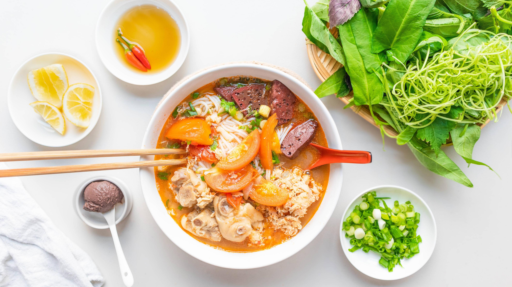
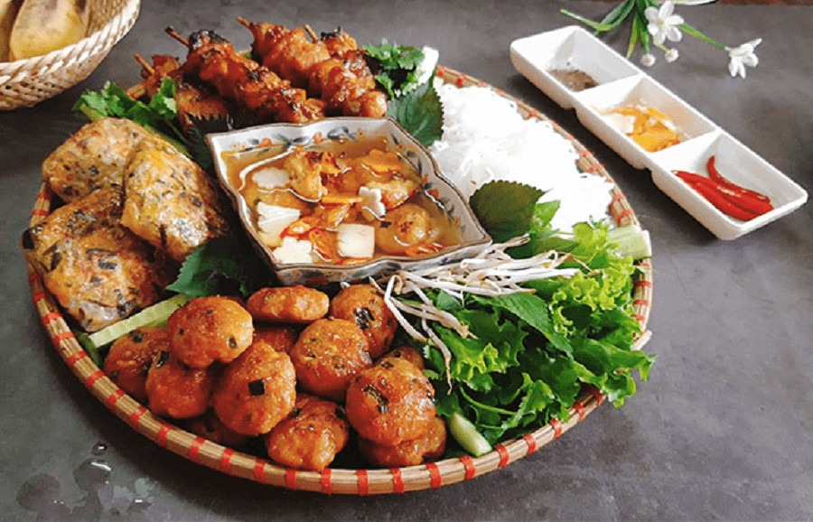

Bun rieu, Pho and Bun cha
Famous Vietnamese foods that are definitely worth a try Famous Vietnamese foods Famous Vietnamese dishes Vietnamese foodsThere are so many other dishes to explore. These are a few articles that I recommend if you want to explore more about this amazing cuisine
Bun Rieu - Vietnamese crab noodles

Pho
Bun cha